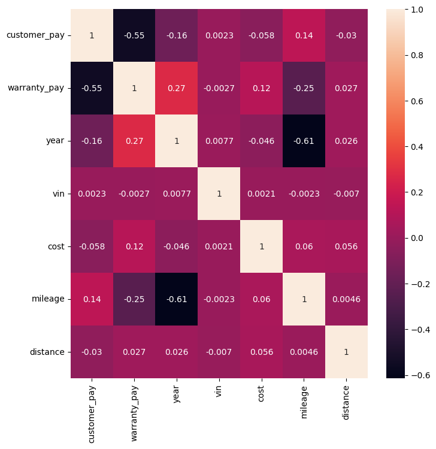
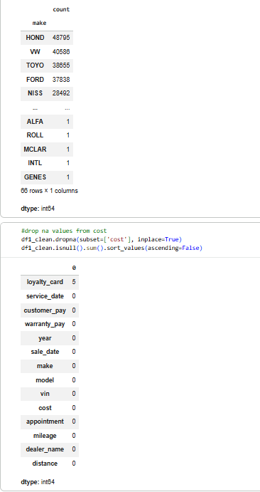
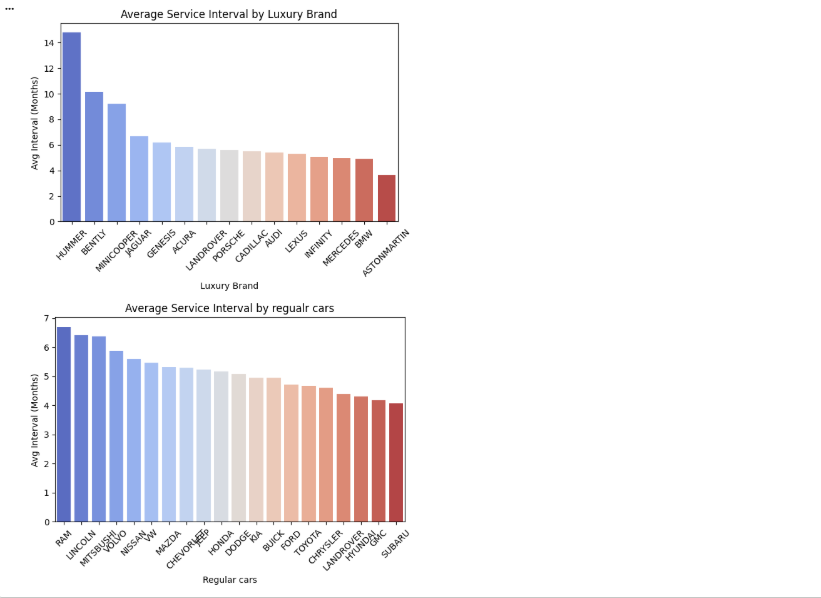
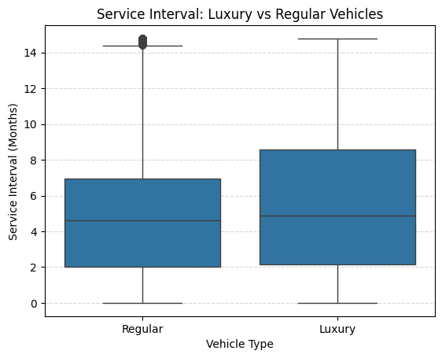
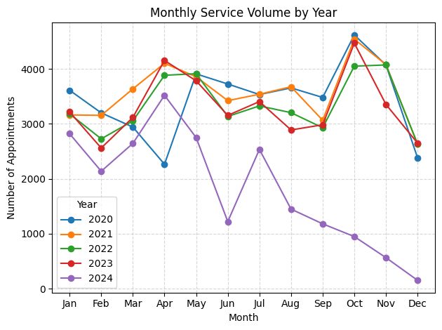
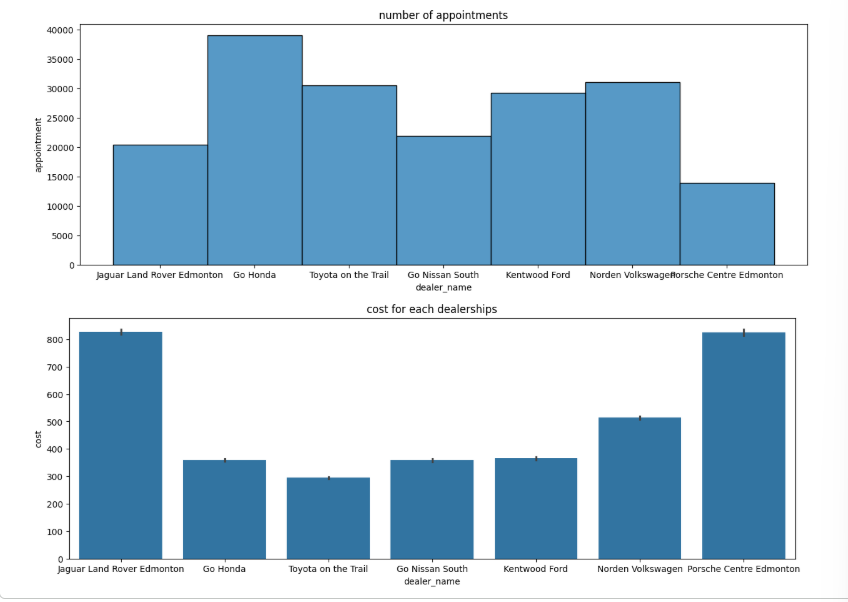
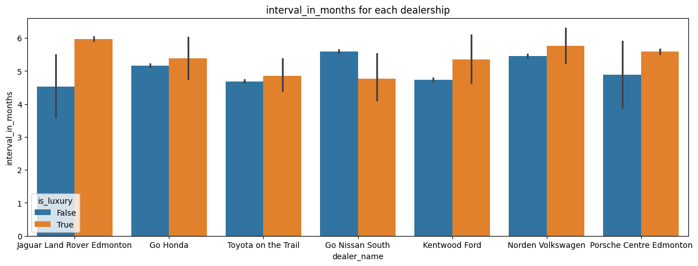
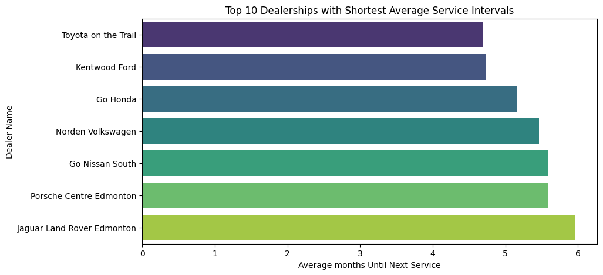
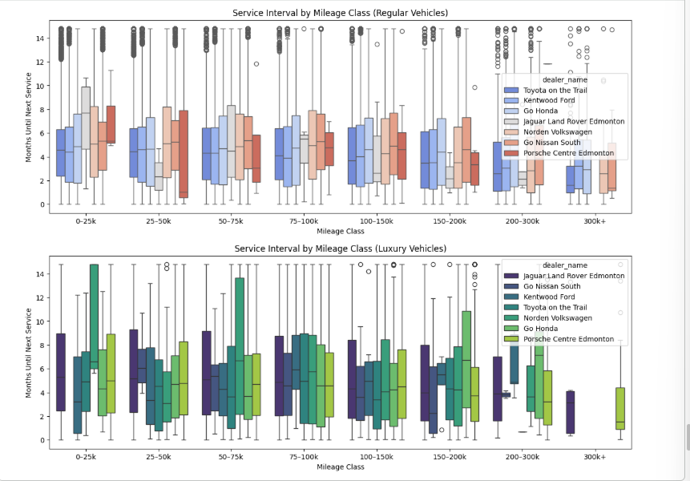
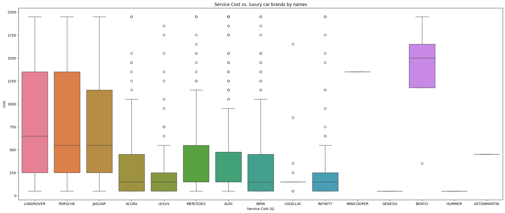

242,818
Original service records
CMPT 3830 | WORK INTEGRATED LEARNING I
Vehicle Service Prediction and Automotive Analytics
NorQuest College | Group 6
Back to PortfolioThis collaborative machine learning project focused on analyzing automotive service records to understand vehicle maintenance patterns and predict the time interval between services.
The project explored how data analytics and predictive modelling could support automotive dealerships in improving service planning and customer engagement.
Automotive dealerships need to understand when customers may require their next vehicle service. Predictive analytics can help dealerships explore opportunities for proactive maintenance reminders, resource planning and customer retention.
Original service records
Records after the initial cleaning stage
Automotive service locations analyzed
Checked missing values, duplicates, inconsistent vehicle brands and data types.
Used histograms, boxplots and correlation analysis to understand automotive service data.
Calculated service intervals, classified vehicle categories and extracted date features.
Applied interquartile range methods to identify and cap extreme values.
Implemented Linear Regression, Random Forest and Decision Tree regression models.
Used GridSearchCV with three-fold cross-validation for Random Forest tuning.
The analysis explored differences between luxury and regular vehicles, maintenance intervals, service costs, monthly service volumes and dealership activity.

Vehicle year and mileage show a negative correlation of -0.61, while customer and warranty payments show a correlation of -0.55.

Missing service cost records were removed and vehicle brand frequencies were examined to improve data quality.

Service intervals vary across vehicle brands, providing insights for personalized maintenance reminder strategies.

Luxury vehicles show slightly longer median service intervals, although both categories demonstrate considerable variation.

October shows relatively high appointment volumes between 2020 and 2023. These patterns may support seasonal staffing decisions. The completeness of 2024 data requires verification.

Service volumes and costs vary across dealerships, highlighting opportunities for operational and resource planning.

Service intervals differ across dealerships and vehicle categories, suggesting potential opportunities for targeted service strategies.

Toyota on the Trail and Kentwood Ford demonstrate the shortest average service intervals among the seven dealerships displayed.

Mileage-based analysis reveals differences in maintenance intervals across dealerships and vehicle categories.

Service costs vary across luxury vehicle brands. Sample sizes and service types should be considered when interpreting these differences.
The following results were recorded on the training dataset for the regular vehicle segment.
| Model | Training R² | Training RMSE (Months) |
|---|---|---|
| Linear Regression | 0.0168 | 3.9617 |
| Random Forest | 0.8231 | 1.6804 |
| Decision Tree | 0.9669 | 0.7268 |
The Decision Tree achieved the highest training R² score. However, strong training performance does not establish accuracy on unseen data and may indicate overfitting.
The Random Forest hyperparameter search reported a best cross-validation R² score of approximately 0.0615, highlighting the need for further validation and model improvement.
Independent test-set evaluation is required before recommending a model for business use.
Programming and data analysis
Data manipulation and preprocessing
Statistical data visualization
Machine learning and model evaluation
This project was completed collaboratively as part of Group 6 during Work Integrated Learning I at NorQuest College.
This project helped me understand the relationship between machine learning and real-world automotive business challenges. It strengthened my understanding of data preprocessing, visualization, regression modelling and model evaluation.
An important lesson was that high training accuracy does not necessarily mean that a model will perform well in real-world applications.
Project documentation and technical evidence are maintained in Jupyter Notebook format.
View Complete Project on GitHub Return to All Projects